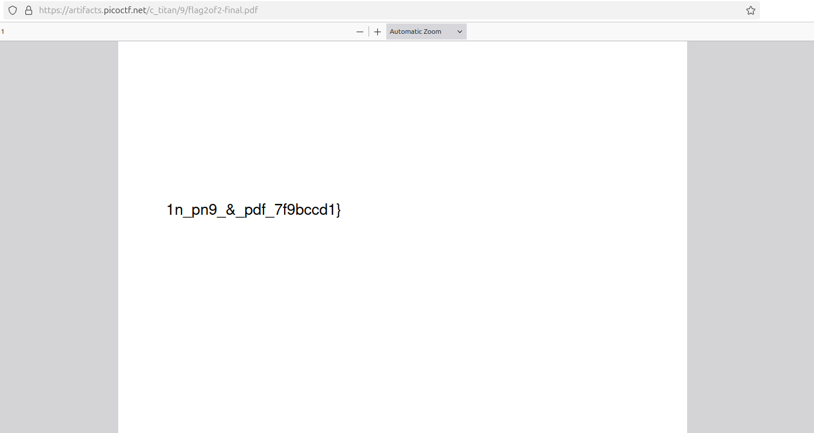
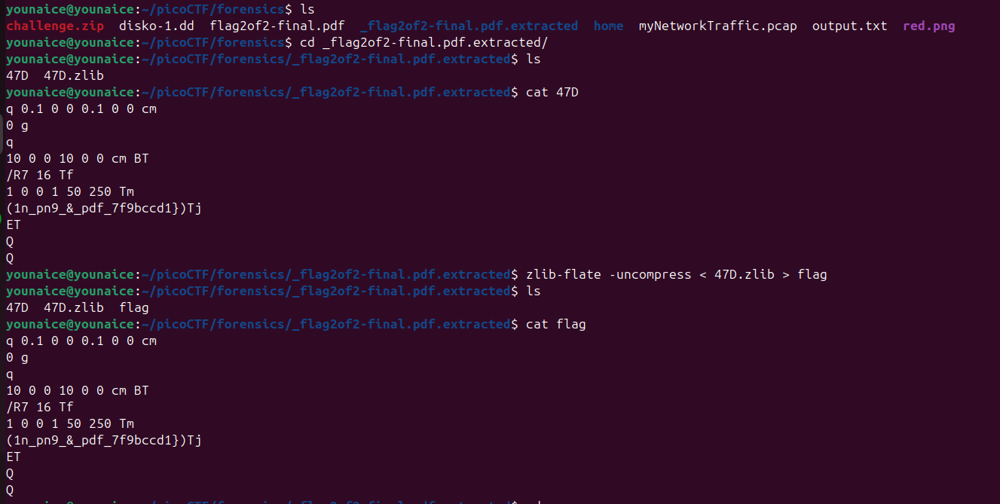
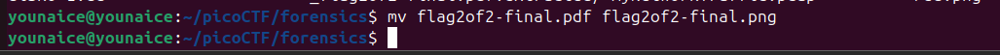
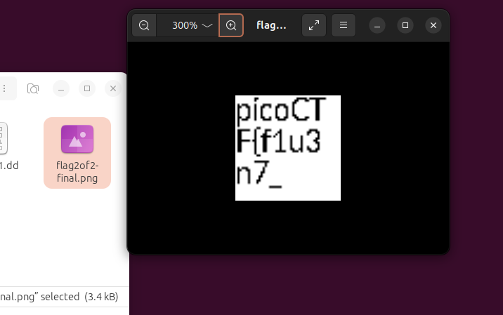

Challenge Description
The Network Operations Center (NOC) of your local institution picked up a suspicious file, they're getting conflicting information on what type of file it is. They've brought you in as an external expert to examine the file. Can you extract all the information from this strange file? Download the suspicious file here.
Writeup Steps
-
After downloaded the file, it shows that it's a suspicious file with just half of the flag

-
At first, I use binwalk to check if there's embedded data and extracted them.

Yes, there is. A weird thing is, it shows that there's file with png, pdf and zlib extension in this pdf file
-
Then, I direct to the folder that has the extracted file, and i read them

both 47D and 47D.zlib give the same output, which is the half of the flag that shown in pdf before.
-
As previously, we did mention that, there's a png extension when we check with binwalk. Hence, I check its file type.
And look, this is not a pdf file, but it's a png file!
-
I change the file's extension from pdf to png, then open the .png file
 
Yay, we got another half!
Flag
picoCTF{f1u3n7_1n_pn9_&_pdf_7f9bccd1}Conclusion
This challenge is a classic example of why input validation is critical.